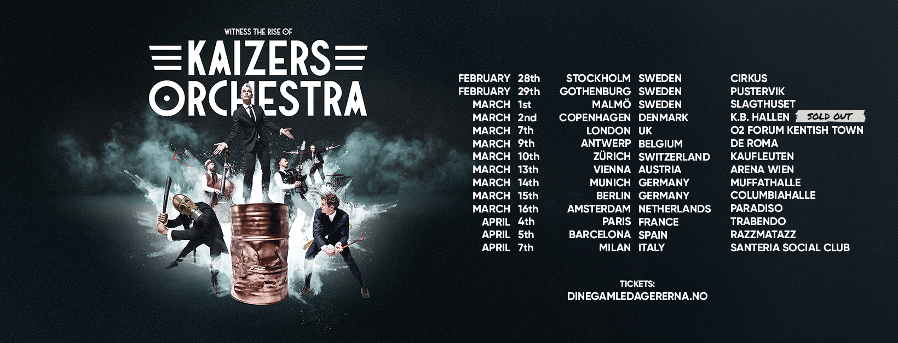

Dine gamle dager er nå
Etter at fansen har blitt teset og teaset viser deg seg at Kaizers Orchestra skal til Europa. Hele 10 000 ble solgt på en dag. Det er mer enn de noen gang har solgt på en Europaturné totalt!
Etter at fansen har blitt teset og teaset viser deg seg at Kaizers Orchestra skal til Europa. Hele 10 000 ble solgt på en dag. Det er mer enn de noen gang har solgt på en Europaturné totalt!